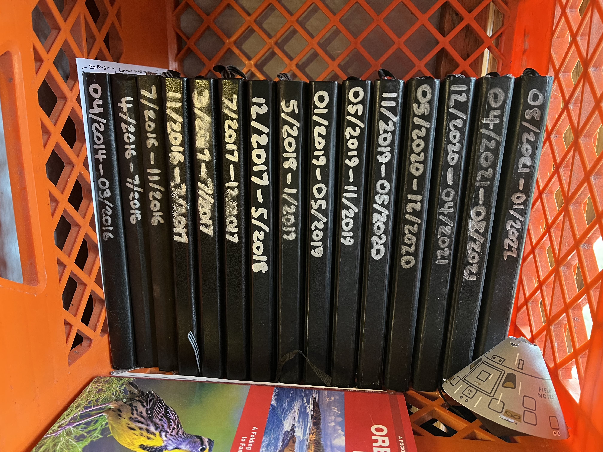

Building a New Creative Writing Habit
TL;DR: I'm trying to build a new creative writing habit. The immediate form that this has taken is a goal of writing 300 words of fiction per day that I post to my blog. I've been using 3-card spreads from a Tarot deck to supply writing prompts. I'm hoping I keep it up.
As far back as elementary school, I've wanted to tell stories. In sprints of hyperfocus and occasional attempts at habit formation, I have written stories over the years. But, I've never done it with regularity. I've rarely finished anything big. And, I've very rarely shared it with anyone.
I'd like to change all of that. Why? Call it a mid-life crisis, I guess. The manifold fuckery of the last few years, paired my own temporal proximity to a half-century of existence has enhanced the urgency of attending to things that I've wanted but haven't quite managed to do.
What's different this time? I don't know. I have an intention and I'd like to follow through on it. This is not one of my strengths as a serial enthusiast. But, nonetheless, I want to try.
Regularity is the first hurdle, I think. But, I'm encouraged by the fact that since 2016 I've been able to maintain a habit of 3 handwritten journal pages nearly every weekday. Just 3 pages daily doesn't sound like much. But, I've filled almost 3,800 pages. I wouldn't assert that they're good words or that anyone should ever read them, but I have been writing.

So, that's why I'm trying to establish a habit with a daily goal of at least 300 words. Something small, but repeated. Something that I should be able to fit into every single day. Maybe I'll write more some days, but the important thing is that I get the engine to turn over.
And, speaking of finishing something big: If I keep it up for 6 months, I'll have accumulated enough words for a novel. Of course, to be fair, a lot of those words are going to be throwaway garbage. But, what if just through sheer volume and writing practice, I could extract sufficient good-enough words to produce a few short stories or novellas? That would be more than I've managed to achieve in literally decades.
In closing, I don't really know if it's going to work. However, I do know that nothing else has worked. This habit thing seems like a new angle on the problem. If it doesn't work out, well I guess I tried. If it does work, well I guess that'll be pretty cool.